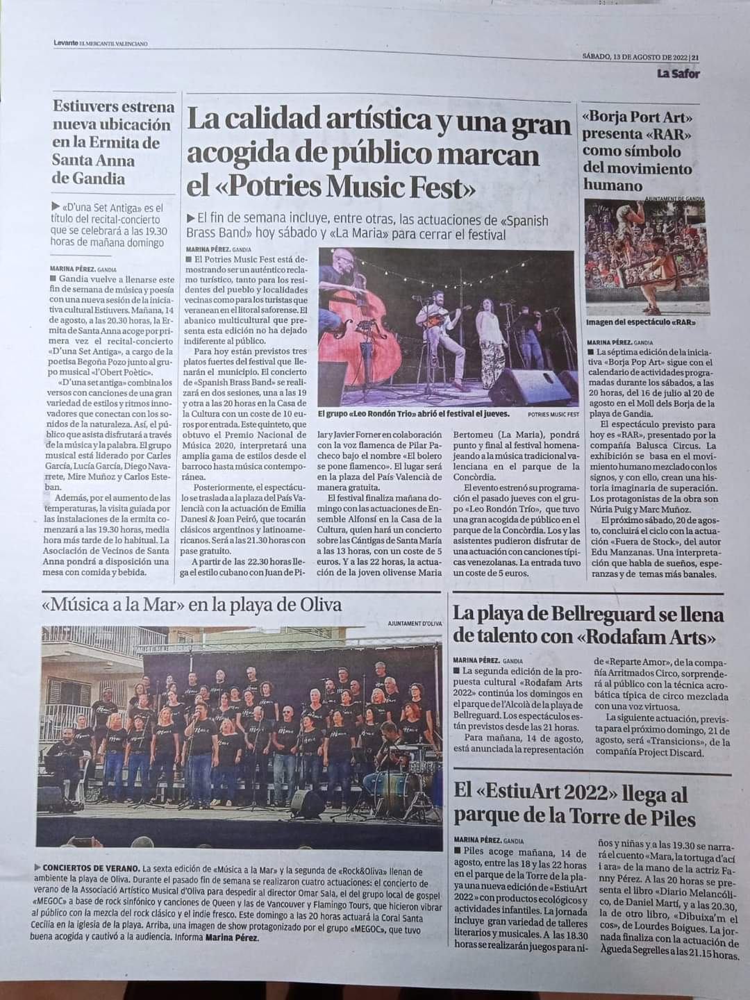
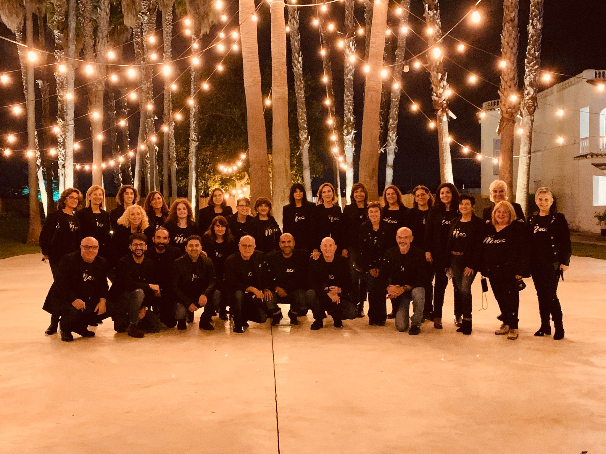

¿Quiénes somos?
El Cor de música moderna i gòspel, naix a finals de l’any 2015, com a una secció més, dins de l’Associació Espai d’Estudis i Pràctica Musical d’Oliva, amb l’objectiu de interpretar diferents estils musicals, com el Gòspel, Funky, Soul, Rock, etc..., donant, així, una altra opció musical als diferents grups corals existents en la localitat. En el mes de juliol de 2020, el cor decideix formar una pròpia Associació dedicada exclusivament a la Música Coral Moderna i Gòspel, fundant així la nova associació “Modern Espai Gòspel Cor”.
En estos anys, el Cor ha actuat en diversos Festivals, Concerts, actes benèfics, Misses, etc..., interpretant un Repertori amb Cançons Gòspel com el “Oh! Happy Day” de Edwin Hawkins, i el “Stand by Me” de Ben E. King, Cançons de Ritman&Blues/Soul com el “Ain’t No Mountai High Enough” de Marvin Gaye, i el “Hit The Road Jack”escrita per Percy Mayfield i cantada per Ray Charles, Balades Rock com “Hey Jude” de Paul MacCartney i “Love of My Life” de Queen, i Clàssics del Rock com “Prou Mary” de Tina Turner, “Hold The Line” del Toto

, “Living On A Preayer” de Bon Jovi i “Bohemian Rhapsody” de Freddie Mercury. En l’actualitat, el cor compta amb més de 50 cantants i un grup musical format per guitarra elèctrica/acústica, bateria, baix elèctric i teclat. A la direcció, es troba Fernando Climent. Amb el seu treball i dedicació, aconsegueix que aquest projecte siga una realitat i, sobretot, que gaudim i vibrem dalt de l’escenari.
